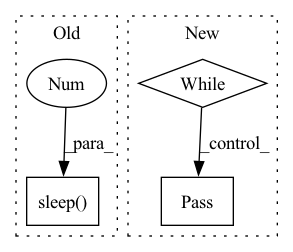

Pattern ID :1360
Before Change
self.lock.release()
total_send_cnt += 1
if total_send_cnt == 0:
time.sleep(0.01 )
print("finished sender")
def _receiver(self, index):
print("start receiver %d" % index)After Change
print("start sender")
while not self.shutdown_flag:
data = next(self.send_generator)
while not self.shutdown_flag:
try:
conn = self.waiting_conns.get(timeout=0.3)
conn.send(data)
break
except queue.Empty:
pass
print("finished sender")
def _receiver(self, index):
print("start receiver %d" % index)In pattern: SUPERPATTERN
Frequency: 3
Non-data size: 3
Instances Fragment ID: 6507115
Project Name: dena/handyrl
Commit Name: 25d51d3b07dcdc2ba10a0459b293fe426d6eca73
Time: 2021-03-16
Author: a.a.b.a.b.c.a.b.c.d.abcd1234@gmail.com
File Name: handyrl/connection.py
M Class Name: MultiProcessJobExecutor
N Class Name: MultiProcessJobExecutor
M Method Name: _sender(1)
N Method Name: _sender(1)
M Parent Class:
N Parent Class:
M File Name: handyrl/connection.py
N File Name: handyrl/connection.py
M Start Line: 172
M End Line: 182
N Start Line: 170
N End Line: 178
Before Change
for _ in range(10):
self.pub_scenario_finished.publish(Bool(True))
rospy.sleep(0.1 )
rospy.signal_shutdown("Finished all episodes of the current scenario")
After Change
// Send Task finished to Backend
if rospy.get_param("/is_webapp_docker", False):
while self.pub_scenario_finished.get_num_connections() <= 0:
pass
self.pub_scenario_finished.publish(Empty())
rospy.signal_shutdown("Finished all episodes of the current scenario") Fragment ID: 6507114
Project Name: arena-rosnav/arena-bench
Commit Name: 80117c5b78fdf5944c32415e0cf8cfcae65c583d
Time: 2023-02-13
Author: reyk-carstens@web.de
File Name: task_generator/scripts/task_generator_node.py
M Class Name: TaskGenerator
N Class Name: TaskGenerator
M Method Name: _send_end_message_on_end(2)
N Method Name: _send_end_message_on_end(2)
M Parent Class:
N Parent Class:
M File Name: task_generator/scripts/task_generator_node.py
N File Name: task_generator/scripts/task_generator_node.py
M Start Line: 110
M End Line: 115
N Start Line: 110
N End Line: 116
Before Change
for _ in range(10):
publisher.publish(Empty())
rospy.sleep(0.1 )
sys.exit()
After Change
if rospy.get_param("/is_webapp_docker", False):
publisher = rospy.Publisher("training_finished", Empty, queue_size=10)
while publisher.get_num_connections() <= 0:
pass
publisher.publish(Empty())
Fragment ID: 6507116
Project Name: arena-rosnav/arena-bench
Commit Name: 80117c5b78fdf5944c32415e0cf8cfcae65c583d
Time: 2023-02-13
Author: reyk-carstens@web.de
File Name: training/scripts/train_agent.py
M Class Name: AnonimousClass
N Class Name: AnonimousClass
M Method Name: main(0)
N Method Name: main(0)
M Parent Class:
N Parent Class:
M File Name: training/scripts/train_agent.py
N File Name: training/scripts/train_agent.py
M Start Line: 77
M End Line: 83
N Start Line: 78
N End Line: 87